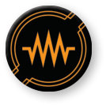

JAM ()

Pilots can jam to conduct electronic warfare and confuse other ships’ systems. When a ship performs the action, it jams. A jamming ship is a ship that is attempting to jam by performing the following steps:
-
Measure range from the jamming ship to any enemy ships.
-
Choose an enemy ship at range 1, or at range 1–2 in the jamming ship's .
-
The chosen ship gains one jam token.
A ship is jammed if it has at least one jam token. Jam tokens are circular, orange tokens. When a ship becomes jammed, the player whose effect caused the ship to gain the jam token chooses for the ship to either remove one of its green tokens or break one of its locks. If either effect is resolved, it removes the jam token. If the ship does not have any green tokens or is not maintaining any locks, it remains jammed.
After a jammed ship gains a green token or acquires a lock, the jammed ship removes that token or breaks that lock. Then it removes one jam token.
-
Some special weapons inflict jam tokens instead of dealing damage.
-
While a ship attempts to jam, it fails if no ship is chosen.
-
Any abilities that cause a jammed ship to gain a green token or acquire a lock still trigger any effects that occur from resolving that ability even if the token is removed or the lock is broken. The jam token does not cause that ability to fail.
-
If an ability instructs a ship to jam, this is different than performing a action. A ship that jams without performing the action can still perform the action this round.
-
If a ship has multiple green tokens or locks, the player whose effect caused the ship to gain the jam token chooses which green token is removed or which lock is broken.